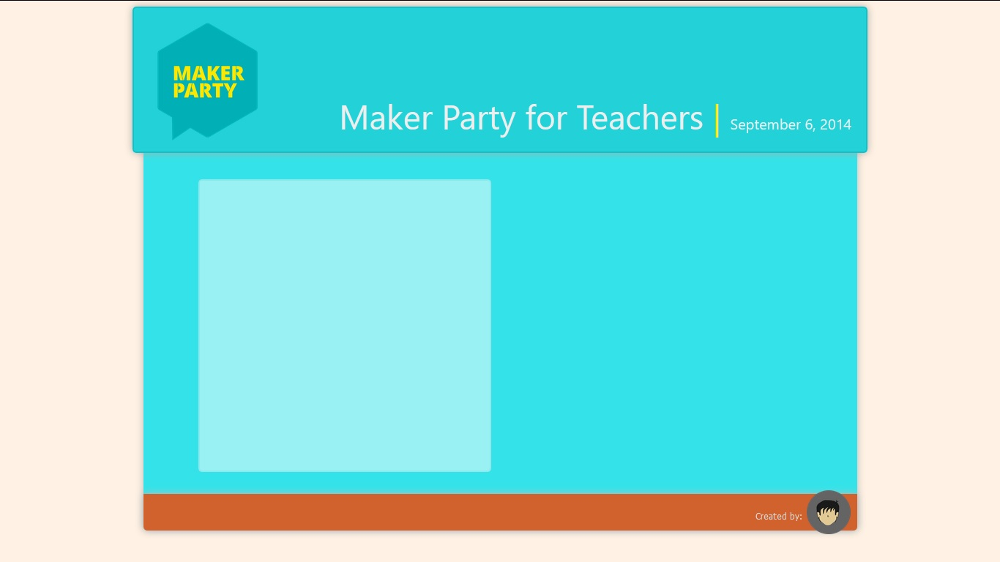

A little trip down memory lane
I remember back when I was in high school (I think that's my 2nd year), we have a computer-related subject. At one time we have this topic on databases where we'll have to make SQL queries described by our teacher. Yes, described because he'll just describe to us what he wants to happen then we'll have to code the queries. By that time we have no idea what we are actually doing. It is just now that I went to college that I realized we were actually doing some sort of Database Management System (DBMS). I was one of the top performing students by that time. (I'm really enjoying what I was doing!)
Then there's this topic where we'll have to make a website - with a picture of our classmates. I have already forgotten what I did that time but I remember that picture should be clickable and the user will be lead to another page that will serve as our classmate's profile page. I can't remember the software we used that time, what I remember is that it features a drag-and-drop interface.
These two experiences molded my passion in programming. Now, let's have a look at some of my works.
My works
Ok, let me tell you this early on that the following are just screenshots. I'm still working on having them to be viewable in this frame.
Static sites
|  |
This is a sample site I've created during the Maker Party for Teachers by Mozilla Philippines. It was held last September 6, 2014 at GlobeLabs in Makati. This is an incomplete site. I myself isn't quite contented with what I've accomplished but given the time given to us (30 minutes, I guess) and the frustrations CSS has given to me (we all know how CSS can be), I guess I've done a satisfactory job.
 |
This is a site I have created when I attended a class sponsored by TESDA last July of 2015. Unfortunately I wasn't able to finish the class because of my health condition. Still I am able to build sites though I feel really dejected because I wasn't able to finish the course. The topics to be discussed to us includes HTML, CSS, JavaScript and PHP. We we're entering the CSS topic when I left.
On the brighter side of things, I was able to learn a little bit about navigation - I think that was the main focus of the HTML topic. I was able to learn so much under our instructor, Pedro Nard. (He runs a website - and I really like it especially the cause).
Dynamic sites
 |
I've created this site when I learned another programming langauge - JavaScript - featuring a simple but very addicting classic game of Battleship. Being created with JavaScript, it enables interactivity to the site as it takes input from the user, processes it and returns a message wether it's a hit or a miss.
Watch out as I'll be adding a leaderboard to it using PHP soon!
 |
Last year (2015), before I left school, I was working on this site as part of our project in System Analysis and Design (SAD). I usually refer to it as "The site that never was".
The main purpose of the site (as a supposed official site of the school) is to accept applications from interested students applying for an entrance exam.